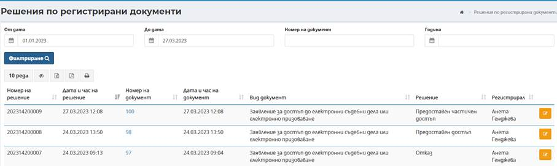

Съдебна регистратура дава възможност за извършване на търсене и преглед на всички решения по регистрирани документи
При първоначално зареждане на екран Решения по регистрирани документи не се визуализират резултати. При директно натискане на бутон Филтриране , се извеждат всички регистрирани в системата решения. Наборът от данни може да бъде филтриран, в зависимост от въведените критерии в полетата От дата - До дата в горната част на екрана.
След натискане на бутон Филтриране резултатите се извеждат в долната половина на екрана в табличен вид:

Визуализират се решенията, например Заявление за достъп до електронни съдебни дела или електронно призоваване.
За всяко решение се визуализира систематизирана информация по отношение на Номер на решение, Дата и час на решение, Номер на документ (активен линк), Дата и час на документ, Вид документ, Решение, Регистрирал. Допълнително може да се извършва сортиране на резултатите по възходящ или низходящ ред за съответната колона в таблицата.
За всяко решение в таблицата е възможно извършване на допълнителни действия, посредством избор номер на документ, представляващи хипервръзка, която препраща към екрани за преглед на документ, по който е изготвено решение. Преглед и редакция на решение е възможна и чрез бутона разположен в десния край на всеки ред.